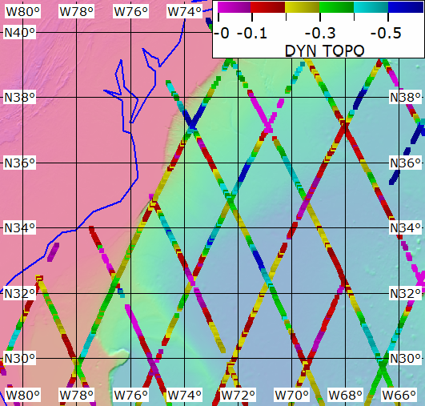
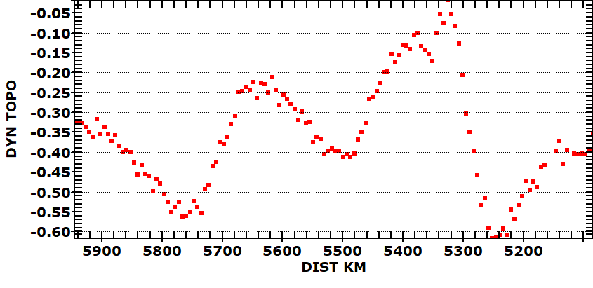
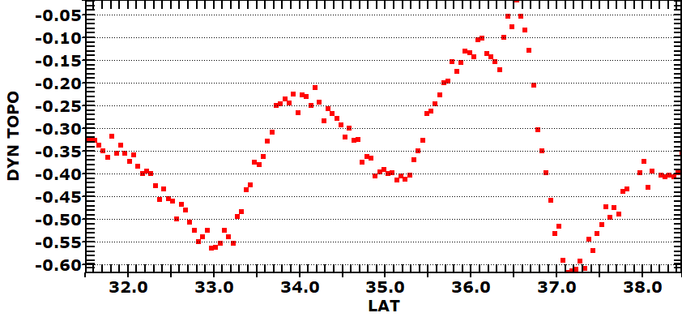

 |
Dynamic topography during one cycle of the Topex-Poseidon radar
altimeter. Gulf Streams flows NE here. Ekman transport pushes water to the right, into the center of the North Atlantic gyre, to form a "hill". Pressure gradient force points down the slope. Coriolis deflects motion to the right. Altimeter can see meanders and eddies. |
 |
Profile from one orbit, north on the right |
 |
Last revision 9/13/2022